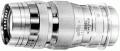

这款镜头的试制开始于1941年。佳能公司的前身是“精机光学研究所”。这款镜头是精机光学研究所的第一款可更换镜头，曾在1947年5月发行的“光画”月刊杂志上刊登广告。对焦控制系统不与测距仪联动，采用目测对焦。在作为精机光学研究所的第一款可更换镜头上市之前，这款镜头原有的标准刺刀式卡口已更改为S卡口。这一镜头系列的名称“Serenar”是由一名佳能员工在公司内部命名比赛中确定的。“Serenar”一词取自“Serene”，后者是月球静海的名称，作为形容词是“宁静”的意思。